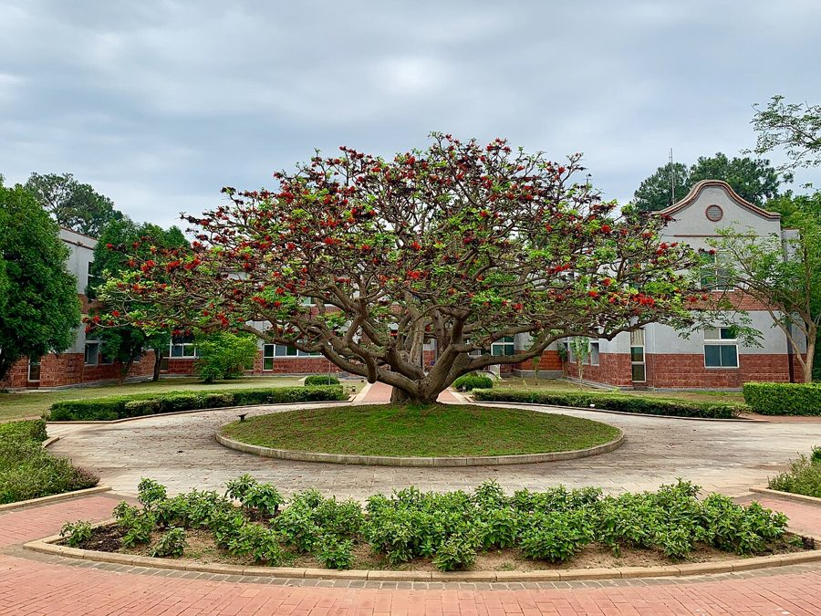

पांगाराIndian Coral Tree
Erythrina variegata · Fabaceae · FLR-0069

- Scientific name
- Erythrina variegata L.
- Family
- Fabaceae
- Hindi
- पांगारा
- Status here
- native
- IUCN
- LC
When to look कब देखें
Present all year.
पांगारा / Indian Coral Tree
Erythrina variegata L. — Fabaceae
पांगारा (मंदार / इंडियन कोरल ट्री) — पूर्वी उत्तर प्रदेश के ग्रामीण क्षेत्रों में खेतों की जीवित बाड़ (live fence), सड़क के किनारों और बगीचों में पाया जाने वाला एक मध्यम आकार का, कांटेदार और पतझड़ी (deciduous) पेड़ है। इस पेड़ की सबसे बड़ी पहचान देर सर्दियों और शुरुआती वसंत (फरवरी-मार्च) में इसके पत्तों के गिरने के बाद, इसकी नग्न शाखाओं पर आने वाले चमकीले मूंगे जैसे लाल रंग के फूल (spectacular crimson-red flowers on bare branches) हैं। यह अद्भुत दृश्य दूर से ही ध्यान आकर्षित करता है। इसके चोंच जैसे लाल फूल मकरंद (nectar) से भरे होते हैं, जो सनबर्ड्स (जैसे Purple Sunbird) और अन्य पक्षियों को भारी संख्या में आकर्षित करते हैं। इसके तने और शाखाओं पर गहरे, मोटे, शंक्वाकार काले कांटे (corky, spiny bark) बने होते हैं। इसके गहरे भूरे रंग के बीजों में जहरीले एल्कलॉइड (erythrine alkaloids) पाए जाते हैं, जिसके कारण वे खाने के लिए अनुपयुक्त और विषैले होते हैं।
Quick Identification त्वरित पहचान
| Feature | Description |
|---|---|
| Tree habit | Medium-sized deciduous tree up to 10–18 meters high, with a spreading canopy and corky, spiny branches |
| Bark | Pale grey to greenish-yellow, rough, covered with numerous small, sharp, black-tipped conical spines |
| Leaves | Trifoliate compound leaves (3 leaflets); leaflets are large, broadly triangular-ovate, and bright green |
| Flowers | Large, pea-like, bright crimson or coral-red, arranged in dense, crowded vertical clusters (spikes) |
| Fruit | Long, cylindrical, slightly curved dark brown or black pod, constricted between seeds |
| Toxicity | TOXIC SEEDS: The kidney-shaped red-brown seeds contain erythrine alkaloids. Do NOT consume. |
Field tip: Look along village field margins in late February. Scan for trees that have dropped all their leaves but are covered in large clusters of bright coral-red, beak-like flowers. Look closely at the bark; it has sharp, black, rose-like prickles all over the trunk and branches.
Morphology आकारिकी
Biometrics (typical measurements of mature trees in the northern Indian plains):
| Measurement | Range |
|---|---|
| Tree height | 10–18 m |
| Trunk diameter (DBH) | 30–50 cm |
| Leaflet length | 8–15 cm |
| Flower spike length | 10–20 cm |
| Flower length | 5–8 cm |
| Pod length | 15–30 cm |
Trunk and Bark: The bark is smooth and pale greyish-green on young branches, turning rough and corky on mature trunks, covered with strong, broad-based black spines that protect the soft wood from large animals.
Foliage: Alternate, trifoliate leaves. The terminal leaflet is larger and broadly ovate, while the lateral leaflets are slightly smaller. The leaves drop completely in January.
Flowers: Bright crimson-red, arranged in dense terminal racemes. The large petal (standard) is curved and erect, enclosing the smaller wings and keel, forming a bird-beak shape.
Fruit and Seeds: The pod is cylindrical, containing 5 to 10 seeds. The seeds are kidney-shaped, glossy, dark reddish-brown or purple.
Associated Species / Interactions संबंधित प्रजातियाँ
- Avian Nectar Consumers: The crimson flowers produce large amounts of dilute nectar. During the bare flowering phase, they are visited by active flocks of Purple Sunbird (Cinnyris asiaticus), Asian Pied Starlings, and Common Mynas, which help pollinate the flowers.
- Nitrogen fixer: Like other Fabaceae, its roots form nodules containing Rhizobium bacteria to fix nitrogen in the soil.
Pests and Diseases कीट और रोग
- Erythrina Gall Wasp: Quadrastichus erythrinae is a tiny wasp that lays eggs in young leaves and shoots, causing severe swelling (galls) and leaf curling, which can kill young saplings.
- Stem Borer Beetle: Larvae bore into the soft, pulpy wood of mature trees.
- Powdery Mildew: A fungal disease that creates a white coating on leaves in shaded areas.
Traditional and Ethnobotanical Use पारंपरिक और नृवंशवनस्पति उपयोग
- Agricultural Live Fence: The young branches are cut and pushed into wet soil during the monsoon. They root very quickly, growing into a thick, spiny live fence that keeps cattle out of fields.
- Traditional Anti-Parasitic Drink: The fresh leaves are crushed to extract juice, which is mixed with honey and consumed traditionally in folk medicine to expel intestinal worms.
- Cooling Bark Poultice: The corky bark is ground with water on a stone plate, and the paste is applied over swollen joints and sprains to reduce inflammation.
- Shade Tree: Planted in black pepper and betel vine plantations to provide support and light, filtered shade for the climbing crops.
Expected Locally स्थानीय रूप से अपेक्षित
Not a field record. Written from published accounts for eastern Uttar Pradesh. No confirmed local sighting yet — if you have seen it, that is what the atlas needs.
अभी तक स्थानीय पुष्टि नहीं। यह विवरण प्रकाशित स्रोतों से है, किसी अवलोकन से नहीं।
A common native tree grown along agricultural field borders and lanes throughout the Basti district. They are regularly observed in the Harraiya, Vikramjot, and Basti blocks. Farmers report that planting pangara as live fences provides excellent wood for light tools and supports climbing beans, while the fallen nitrogen-rich leaves fertilize the soil. The bright crimson blooms in spring are a welcome sign of the end of winter.
Distribution वितरण
Global range: Native to the coastal forests and riverine plains of the tropical Indian Ocean region (South Asia, Southeast Asia, East Africa, and Pacific Islands).
In India: Widespread in all warm tropical states and Gangetic plains.
In Uttar Pradesh: Common state-wide in all agricultural plains.
In Basti district / eastern UP: Widespread across all farming blocks.
Research Questions शोध प्रश्न
Anyone can investigate these | कोई भी इन प्रश्नों की जाँच कर सकता है
- How many Purple Sunbirds visit a single flowering Indian Coral Tree in a 15-minute window during March? — Count and record bird visits.
- Do branches cut during the monsoon root faster in sandy soil compared to clay soil? — Monitor live fence survival.
- What is the density of sharp black spines on a 1-meter section of trunk in a mature tree versus a young sapling? — Compare spine counts.
- How long does a Coral Tree remain completely bare of leaves during the spring flowering phase? — Track tree phenology.
- Does the Erythrina Gall Wasp cause more damage to trees planted in open fields compared to those in shady village groves in Basti? / क्या बस्ती के खुले खेतों में लगे पांगारा के पेड़ों में घने बागों के पेड़ों की तुलना में गॉल वास्प (Gall Wasp) का प्रकोप अधिक होता है? — Survey leaf damage.
Similar Species मिलती-जुलती प्रजातियाँ
| Species | How to tell apart | comparison |
|---|---|---|
| Flame-of-the-Forest / Palash (Butea monosperma) | Leaves are rounder and velvety; orange-red flowers are shaped like parrot beaks, covered in grey velvet; bark has no spines | पलाश — शंक्वाकार लाल-नारंगी फूल, काँटों का अभाव |
| Flame Tree / Gulmohar (Delonix regia) | Has fine bipinnate compound leaves; flowers are wide open with five orange-red petals; bark is smooth | गुलमोहर — द्विपक्षीय बारीक पत्तियां, काँटों का अभाव |
| Drumstick Tree (Moringa oleifera) | Has tripinnate leaves with tiny leaflets; hanging cream-white fragrant flowers; ribbed green pods | सहजन — सफेद छोटे फूल, बारीक पत्तियां |
Field rule: Medium deciduous tree with pale greenish-grey spiny bark, trifoliate leaves, and large spikes of bright crimson-red beak-like flowers appearing on bare branches in spring, is the Indian Coral Tree.
Taxonomy & Classification वर्गीकरण
Original description. Carl Linnaeus described the Indian Coral Tree as Erythrina variegata in 1753 in his Species Plantarum (Vol. 2, p. 706). The type locality was listed as India. The genus name Erythrina is derived from the Greek erythros (red), referencing the bright flowers. The specific name variegata is Latin for variegated, referring to the yellow-striped leaves found in some ornamental varieties.
Subspecies. Monotypic — no subspecies are currently recognised.
Family and order placement. Placed in the order Fabales, family Fabaceae (legume family), subfamily Faboideae, tribe Phaseoleae.
Phylogenetic notes. Erythrina is a specialized genus of bird-pollinated legumes, having evolved large, nectar-rich flowers and red warning-colored seeds (erythrine alkaloids) to reduce seed predation.
IUCN status rationale. Assessed as Least Concern (LC) by the IUCN Red List (assessed by the IUCN SSC Global Tree Specialist Group). It has a massive tropical range and is widely cultivated.
Photo Gallery फोटो गैलरी
References संदर्भ
- Linnaeus, C. (1753). Species Plantarum. Laurentii Salvii, Holmiae, Vol. 2, p. 706. [original description]
- Brandis, D. (1906). Indian Trees. Archibald Constable & Co., London.
- Troup, R. S. (1921). The Silviculture of Indian Trees. Oxford University Press.
- Neill, D. A. (1988). Experimental Studies on Erythrina (Leguminosae). Annals of the Missouri Botanical Garden.
- World Flora Online (2024). Erythrina variegata taxon details.
- GBIF Occurrence Data — Erythrina variegata, India (2010–2025).
Source file: species/flora/trees/indian_coral_tree.md